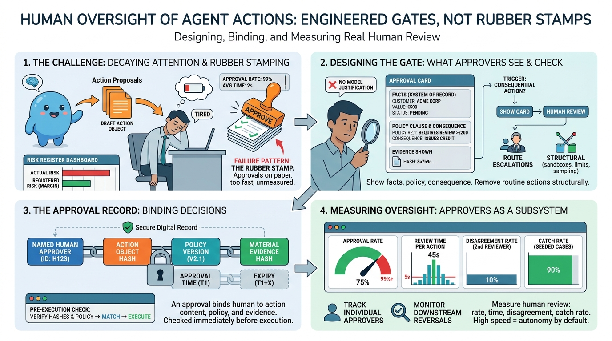

Part VII — CONTROL: Security, Privacy and Human Oversight
Human Oversight and Bounded Autonomy
AI-assisted: written with Claude Code, images generated with the Gemini API. How this works

Image generated by Google Gemini (gemini-3-pro-image-preview)